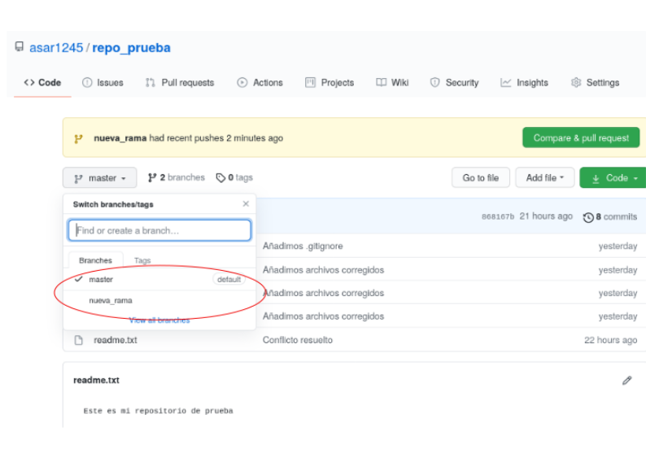

GitHub
Contenido
GitHub¶

Figura 16 Logo de GitHub. Imagen utilizada bajo la licencia CC BY-SA 4.0. https://commons.wikimedia.org/wiki/File:GitHub_Mark.png¶
{kind=link}
En esta parte estudiaremos GitHub, cómo conectar con un repo local de Git, y sus herramientas más importantes.
¿Qué es GitHub?¶
Es un sitio web que provee repositorios de Git de forma remota, que pueden ser públicos o privados. Un repositorio remoto se almacena en un servidor externo y se puede acceder mediante conexión a internet, lo que permite sincronizar cambios en los archivos de código entre varios usuarios con acceso al repositorio remoto.
Además, GitHub funciona como una red social de geeks, en la que se comparten de forma libre proyectos y otros recursos de programación, investigación, recreación y de todo tipo.
Creación de cuenta de GitHub y repositorio vacío¶
Si todavía no posees una cuenta de GitHub, puedes seguir las instrucciones de este blog para realizar este proceso, que es necesario para seguir con las siguientes partes del este tutorial.
En tu cuenta de GitHub, debes crear un repositorio vacío, para lo que debes ir a la pantalla inicial de tu cuenta y usar el botón New de la sección de repositorios en la parte izquierda, opción que está señalada con un círculo rojo en la siguiente captura de pantalla:
{kind=link}
Después, debes poner un nombre y una descripción a tu repositorio, en este caso lo llamaremos repo_prueba, no seleccionaremos ninguna de las opciones, y finalmente se usa el botón Create repository, opción que está señalada con un círculo rojo en la siguiente captura de pantalla:
{kind=link}
Con esto, haz creado tu primer repositorio, con el que trabajaremos en este tutorial.
Definir las variables de ambiente de usuario e email¶
Luego de crear tu cuenta de GitHub y tu primer repositorio, debes establecer las variables de ambiente de Git de tu usuario y correo de la cuenta de GitHub, lo que se realiza con los siguiente comandos:
$ git config --global user.name "tu usuario"
$ git config --global user.email "tu correo"
Para comprobar que las variables fueron configuradas se usa el siguiente comando:
$ git config --list
Como resultado, vas a obtener que las variables user.email y user.name fueron definidas con tus datos.
Conectar repositorio local de Git con repositorio remoto de GitHub¶
Para conectar un repositorio remoto de GitHub con uno local de Git se usa el comando git remote add seguido del nombre que le asignamos al repositorio (por convención se usa origin), y la dirección URL del repo de GitHub:
$ git remote add origin https://github.com/asar1245/repo_prueba.git
Para obtener la dirección URL del repo de GitHub puedes copiar el enlace que aparece luego de crear el repositorio, como se observa en la siguiente captura de pantalla:

Para comprobar los repositorios remotos a los que está conectado tu repo local se usa el comando git remote -v:
$ git remote -v
origin https://github.com/asar1245/repo_prueba.git (fetch)
origin https://github.com/asar1245/repo_prueba.git (push)
Como se observa en el resultado del anterior comando, la conexión se estableció correctamente.
Actualizar contenidos del repo remoto con los cambios del repo local¶
Luego de establecer esta conexión, podemos actualizar el contenido del repo remoto con la información del repo local,incluyendo todos sus commits.
Esto se realiza con el comando git push. La primera vez que se establece la conexión se puede usar la opción -u (con esto se establece origin por defecto y ya no se debe especificar en los futuros push) seguido del nombre asignado al repo remoto (en este caso origin), y el nombre de la rama del repo remoto (en este caso master).
$ git push -u origin master
Username for 'https://github.com':tu usuario
Password for 'tu correo':
Luego de correr este comando se solicita ingresar tu usuario y clave de GitHub. Por cuestiones de seguridad, ya no se recomienda ingresar la clave de la cuenta en esta parte, y en su lugar se sugiere ingresar un access token, que puedes generar siguiendo las instrucciones de este tutorial de la página oficial de GitHub.
Luego de realizar esto debiste obtener un resultado similar a este:
Enumerating objects: 23, done.
Counting objects: 100% (23/23), done.
Delta compression using up to 4 threads
Compressing objects: 100% (16/16), done.
Writing objects: 100% (23/23), 1.89 KiB | 966.00 KiB/s, done.
Total 23 (delta 7), reused 0 (delta 0)
remote: Resolving deltas: 100% (7/7), done.
To https://github.com/asar1245/repo_prueba.git
* [new branch] master -> master
Branch 'master' set up to track remote branch 'master' from 'origin'.
Con esto tu repo remoto de GiHub se tuvo que actualizar con los contenidos del repo local, como se observa en la siguiente captura de pantalla:

Comparar dos ramas antes de hacer merge - pull requests¶
La herramienta de GitHub pull request permite comparar de forma interactiva dos ramas diferentes antes de realizar un merge entre estas. De esta forma, un usuario puede preguntar a otro si quiere incorporar los cambios de una rama en otra.
Para probar esta herramienta, eliminaremos archivo1.sh y modificaremos el contenido de readme.txt de la rama nueva_rama, haremos el commit respectivo y el push al repositorio remoto:
$ git checkout nueva_rama
$ rm archivo1.sh
$ echo "Nueva línea de readme" >> readme.txt
$ git add .
$ git commit -m "Actualización readme.txt y eliminación archivo1.sh"
[nueva_rama c1612b6] Actualización readme.txt y eliminación archivo1.sh
2 files changed, 1 insertion(+), 3 deletions(-)
delete mode 100644 archivo1.sh
$ git push origin nueva_rama
Username for 'https://github.com': tu usuario
Password for 'tu correo': tu access token
Enumerating objects: 5, done.
Counting objects: 100% (5/5), done.
Delta compression using up to 4 threads
Compressing objects: 100% (3/3), done.
Writing objects: 100% (3/3), 357 bytes | 357.00 KiB/s, done.
Total 3 (delta 1), reused 0 (delta 0)
remote: Resolving deltas: 100% (1/1), completed with 1 local object.
remote:
remote: Create a pull request for 'nueva_rama' on GitHub by visiting:
remote: https://github.com/asar1245/repo_prueba/pull/new/nueva_rama
remote:
To https://github.com/asar1245/repo_prueba.git
* [new branch] nueva_rama -> nueva_rama
Al abrir tu repositorio de GitHub puedes verificar que ahora tienes dos ramas, como se observa en la siguiente captura de pantalla:
{kind=link}
Ahora, podemos usar la herramienta pull request para comparar las dos ramas del repo remoto, como se muestra a continuación:
{kind=link}
Con esto se abre una ventana para añadir el nombre y comentarios del pull request, así como las diferencias entre las dos ramas en la parte inferior, como se observa en la siguiente captura de pantalla:
{kind=link}
Debemos añadir un mensaje, y usar la opción Create pull request, con lo que se realizó esta acción.
Tip
Esta herramienta es útil para sugerir cambios en repositorios de otros desarrolladores debido a posibles errores.
Al crear el pull request se observa que hay conflictos, por lo que se debe usar la opción Resolve conflicts, y en este caso dejaremos los cambios de la rama externa y usaremos la opción Commit merge, como se observa a continuación:
{kind=link}
Finalmente, realizaremos el merge con las opciones Merge pull request y Confirm merge. Con esto se realizó el merge de forma exitosa, lo que puedes comprobar observando los contenidos del readme de la rama master en la parte de Code, como se muestra en la siguiente captura de pantalla:

Actualizar el repo local con los cambios hechos en el repo remoto¶
Cuando se realizan cambios en el repositorio remoto, es importante actualizar el repositorio local con estos cambios, lo que se realiza con el comando git pull:
$ git checkout master
$ git pull
$ cat readme.txt
Esta línea se añadió en el documento de la nueva rama
Nueva línea de readme
Como se observa en el resultado del anterior comando, los contenidos del repo local se actualizaron de forma correcta.
Nota
El comando git pull agrupa en un solo comando los comandos git fecth, que permite descargar los contenidos del repo remoto, y git merge, que actualiza el contenido del repo local con la información del repo remoto. Para más información sobre este tema pueden leer este blog
Clonar repositorio remoto a cuenta personal de GitHub - Fork¶
El Fork es una herramienta de GitHub que permite clonar un repositorio remoto de otros usuarios en nuestra cuenta, y poder modificar el código fuente. Después, se pueden sugerir cambios del repositorio remoto de origen mediante pull request.
Como ejemplo, deben clonar el repositorio del libro del curso a su cuenta de GitHub. Para esto, deben acceder al siguiente link, y utilizar la opción Fork, como se muestra a continuación:
{kind=link}
Con esto, puedes constatar que se guardó una copia del repo del libro en los repositorios de tu cuenta de GitHub.
Clonar repositorio remoto a un directorio local¶
Luego de realizar el Fork de un repositorio a su cuenta de GitHub, pueden descargarlo a su computadora desde la terminal usando el comando git clone. Como ejemplo, se usará el repo del libro del curso que clonaron en la sección anterior a su cuenta de GitHub. Para esto necesitan el link del repo, lo que pueden obtener como se muestra a continuación:

Con esto corremos los comandos correspondientes:
$ cd ~
$ git clone
$ git clone link de su repositorio
Cloning into 'unix.bioinfo.rsgecuador'...
remote: Enumerating objects: 620, done.
remote: Counting objects: 100% (151/151), done.
remote: Compressing objects: 100% (113/113), done.
remote: Total 620 (delta 87), reused 82 (delta 37), pack-reused 469
Receiving objects: 100% (620/620), 37.43 MiB | 2.24 MiB/s, done.
Resolving deltas: 100% (239/239), done.
$ cd unix.bioinfo.rsgecuador/
$ git status
On branch gh-pages
Your branch is up to date with 'origin/gh-pages'.
nothing to commit, working tree clean
Clonar un repositorio tiene la ventaja de que mantiene el seguimiento del repositorio remoto asociado al repo local. Esto lo podemos comprobar con el comando git remote -v:
$ git remote -v
De esta forma, podemos cambiar los contenidos del repo local y actualizar el repo remoto mediante commits y pulls, como vimos en las secciones anteriores.
Actualizar repo local obtenido a partir de un fork con los cambios del repo original¶
Si deseas actualizar los contenidos de tu repo local y remoto con los cambios hechos en el repo del que se hizo el Fork, lo puedes hacer añadiendo el URL del repo del que hiciste Fork con el comando git remote add:
$ git remote add upstream https://github.com/RSG-Ecuador/unix.bioinfo.rsgecuador.git
Después, debes usar el comando git pull o git fetch, y git merge para actualizar los contenidos del repo local con la información del repo remoto del que se hizo el Fork. En este caso optaremos por git fetch, y git merge para mostrar que su funcionalidad es igual a git pull:
$ git fetch upstream
From https://github.com/RSG-Ecuador/unix.bioinfo.rsgecuador
* [new branch] gh-pages -> upstream/gh-pages
* [new branch] mdonly -> upstream/mdonly
$ git merge upstream/gh-pages
Already up to date
De esta forma, puedes actualizar los contenidos de tu repo local con las actualizaciones que se hagan en el repo remoto del que se hizo el Fork, actualizar el repo remoto de tu cuenta de GitHub con estos cambios, proponer pull requests o cualquiera de las otras acciones aprendidas en este tutorial.
Material suplementario¶
Kross, S. (2017). The unix workbench. Capítulo Git and GitHub (pp 154-209). Leanpub. https://leanpub.com/unix
https://www.freecodecamp.org/news/practical-git-and-git-workflows/